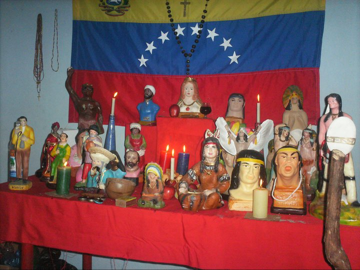

¿Qué es un portal espiritual?
Un portal espiritual es una puerta de acceso o conexión entre la tercera dimensión (plano físico) y otras dimensiones (como el plano etérico o astral). Se forman en vórtices de energía, lugares de la tierra con fuerte carga magnética o espiritual. A través de ellos pueden transitar energías benignas o malignas.
Tipos de Portales
- Portal Espacio-Espacio: Conecta puntos diferentes dentro de una misma dimensión. Explica fenómenos como decir "ya he estado aquí" sin haberlo visitado físicamente.
- Portal Vórtice: El más común. Permite la conexión entre planos diferentes (espíritus, seres de luz, entes). Se ubican en zonas de alta carga energética.
- Portal Tiempo o Espacio-Tiempo: Túneles que conectan energías entre puntos distantes del universo y del tiempo.
¿Cómo localizar un portal?
Se suelen detectar por fenómenos extraños: cambios bruscos de temperatura, luces repentinas, o alteraciones emocionales súbitas en las personas. Los sensitivos pueden percibirlos como incomodidad (si es negativo) o bienestar (si es positivo). Herramientas como el péndulo o las varillas de radiestesia son usadas comúnmente para su localización.
Portales Negativos y Cómo Cerrarlos
Los portales de bajo astral atraen negatividad, violencia y "parásitos astrales" que afectan la salud y mente de las personas. Es vital cerrarlos para restaurar la armonía.
Métodos de cierre:
- Visualización (Llama Violeta): Meditar visualizando una llama violeta que gira en sentido horario y absorbe el portal hasta hacerlo desaparecer.
- Piedras Protectoras: Colocar turmalina negra, cianita o cuarzo sobre el lugar del portal durante al menos 2 horas para absorber y transmutar la energía.